| Zdjęcia | Miejsce & Bilety | Co zobaczyć i kiedy? |
|---|---|---|
|
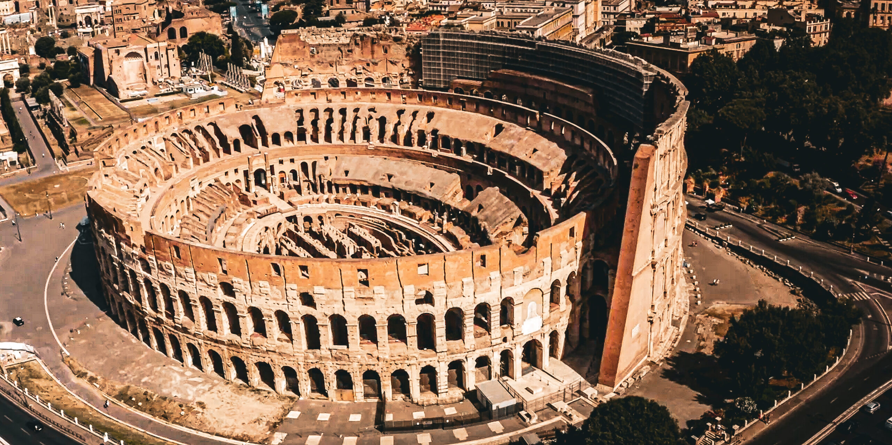 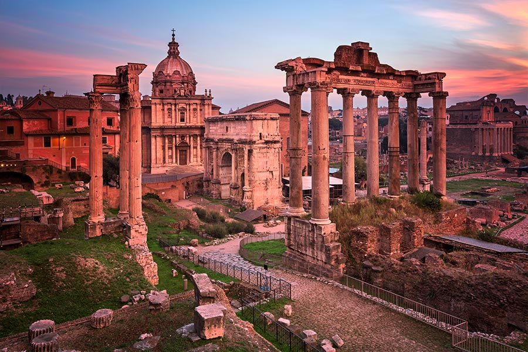 |
Koloseum, Forum Romanum i Palatyn
📍 Centralny Rzym · 1 bilet – 3 atrakcje
16–24 EUR
🚨 KUP DZIŚ W DOMU
Na miejscu bilety wyprzedane, kolejka do kasy to 2–3 h w słońcu. Bilet online = wejście na konkretną godzinę bez kolejki.
🎟 Kup bilety online
Podstawowy: 16 EUR · Z arenami i podziemiami: 24 EUR |
Największy amfiteatr starożytności (50 000 miejsc). W pakiecie ruiny Forum Romanum i wzgórze Palatyn – cały dzień historii.
🎯 Najlepsza pora: 8:00–9:00 tuż po otwarciu lub po 16:00. Południe: tłok + upał. |
|
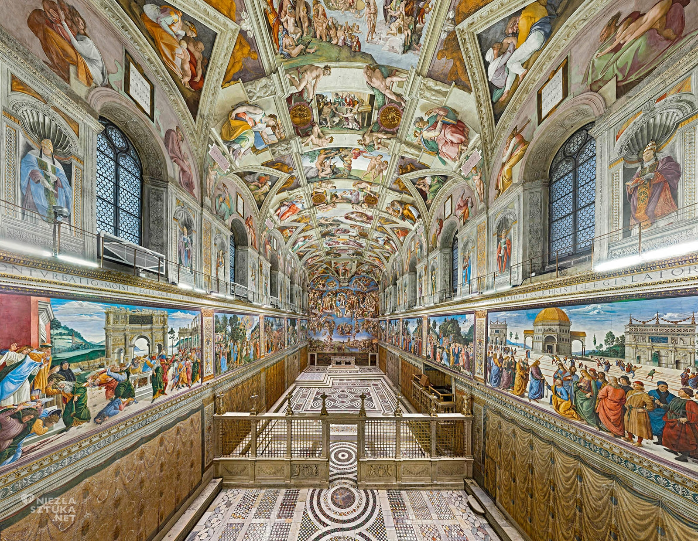 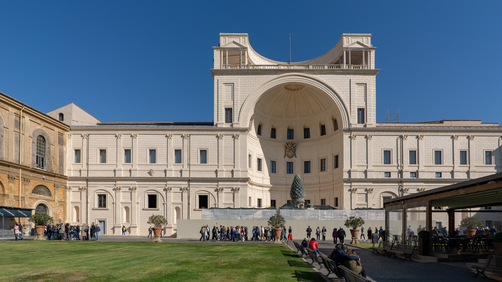 |
Muzea Watykańskie i Kaplica Sykstyńska
📍 Watykan
20–25 EUR
🚨 KUP DZIŚ W DOMU
Brak biletu = do 4 h stania wzdłuż murów. Bilet online to dosłownie pół urlopu zaoszczędzone.
🎟 Kup bilety online
Uwaga: bilet do Muzeów nie obejmuje Bazyliki – to oddzielna kolejka. |
54 galerie, setki sal, freski Michała Anioła na sklepieniu Kaplicy. Plan minimum 3–4 godziny.
🎯 Najlepsza pora: 8:00 rano przy otwarciu lub po 14:00, gdy wycieczki wychodzą. |
|
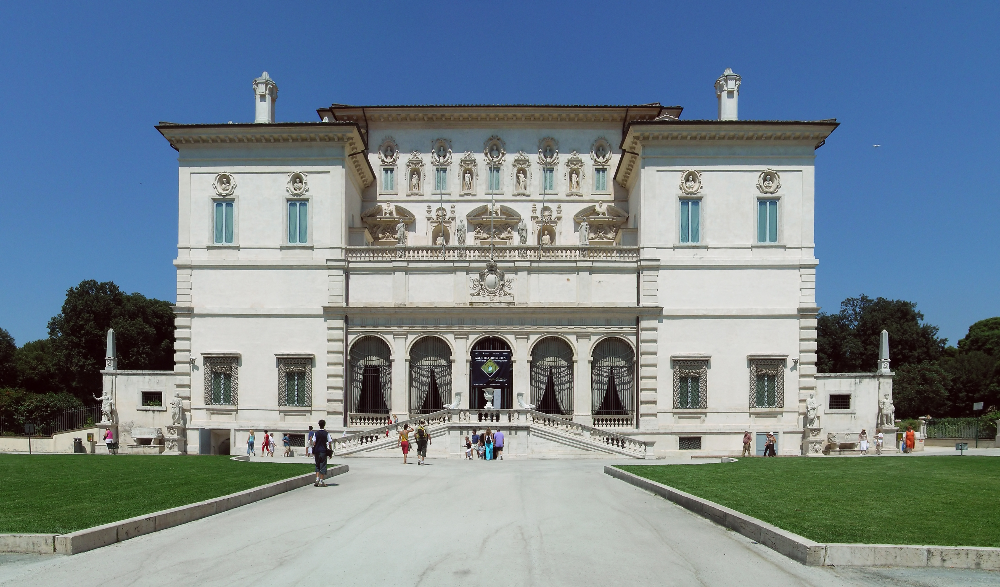 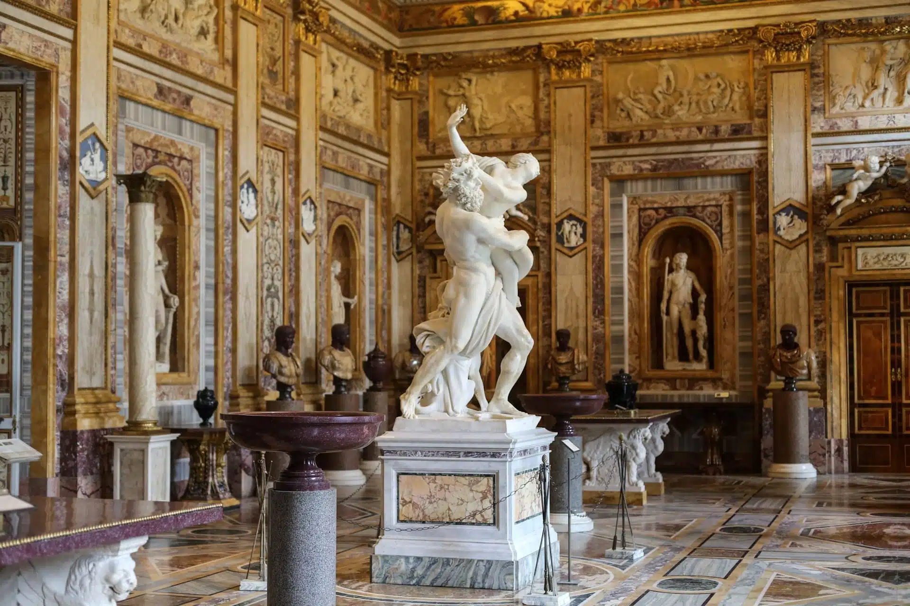 |
Galeria Borghese
📍 Park Villa Borghese
15–20 EUR
🚨 KUP DZIŚ W DOMU
Ścisły limit 360 osób na 2-godzinny slot. Po wyprzedaniu zero biletów w kasie na bieżący dzień.
🎟 Kup bilety online
|
Najlepszy zbiór rzeźb Berniniego na świecie (Apollo i Dafne, Dawid, Porwanie Prozerpiny) + Caravaggio. Obowiązkowe dla miłośników sztuki.
🎯 Godzina wejścia narzucona biletem – pora bez znaczenia. |
|
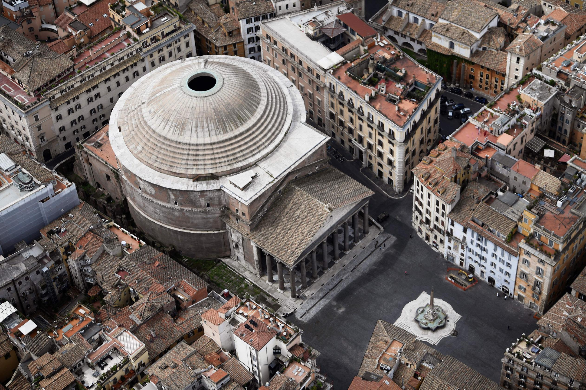 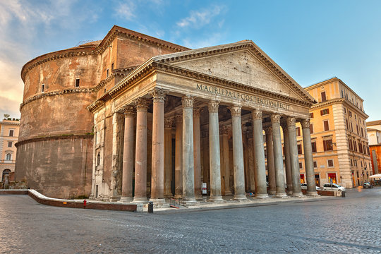 |
Panteon
📍 Plac della Rotonda
5 EUR
👉 ONLINE W DNIU WIZYTY
W weekendy i święta bez rezerwacji online nie wejdziesz. Kup rano przez telefon i omiń kolejkę do kasy.
🎟 Kup bilety online
|
Najlepiej zachowany budynek starożytnego Rzymu (125 r. n.e.). Betonowa kopuła z 9-metrową dziurą (oculus) wpuszczającą deszcz i słońce. Grobowiec Rafaela.
🎯 Najlepsza pora: 9:00 przy otwarciu. |
|
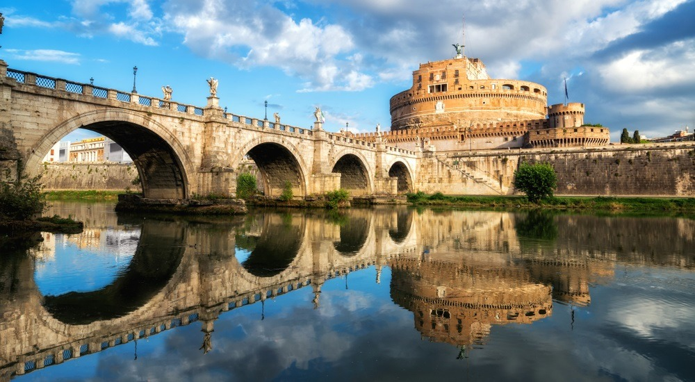 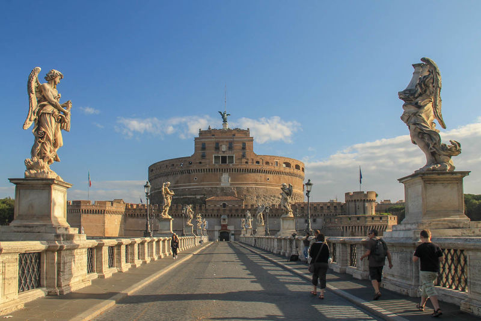 |
Zamek św. Anioła
📍 Nad Tybrem, przy Moście Anioła
15 EUR
👉 ONLINE LUB KASA (max 20 min)
Kolejka do kasy idzie stosunkowo szybko. Online warto kupić jedynie dla pewności i zaoszczędzenia ~20 minut.
🎟 Kup bilety online
|
Mauzoleum Hadriana przerobione na twierdzę papieską. Taras widokowy z jednym z najlepszych panoramicznych widoków na Rzym.
🎯 Najlepsza pora: Zachód słońca – widok z tarasów robi piorunujące wrażenie. |
|
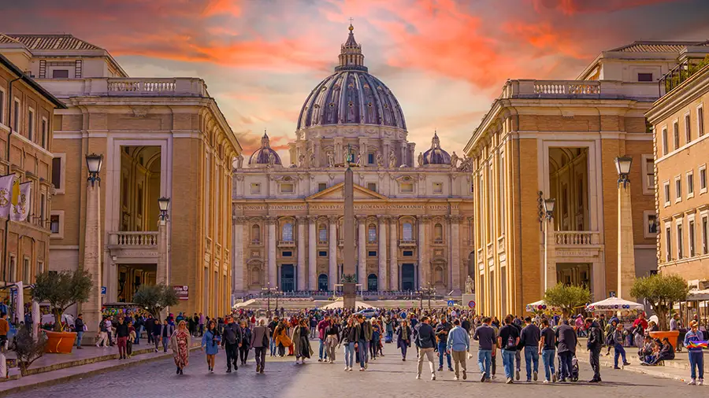 
|
Bazylika św. Piotra
📍 Watykan, Plac św. Piotra
Wejście bezpłatne · Kopuła 8 EUR
✅ WEJŚCIE BEZPŁATNE
Mimo braku biletu – jedna duża kolejka do kontroli bezpieczeństwa. Nie ominiesz jej pieniędzmi. Wejdź wcześnie rano.
ℹ Info & kopuła
|
Największa bazylika świata – Pieta Michała Anioła, baldachim Berniniego, złocone wnętrze. Kopuła (537 schodów) daje widok na cały Watykan.
🎯 Najlepsza pora: 7:00–8:00. O 11:00 kolejka przecina cały plac. |

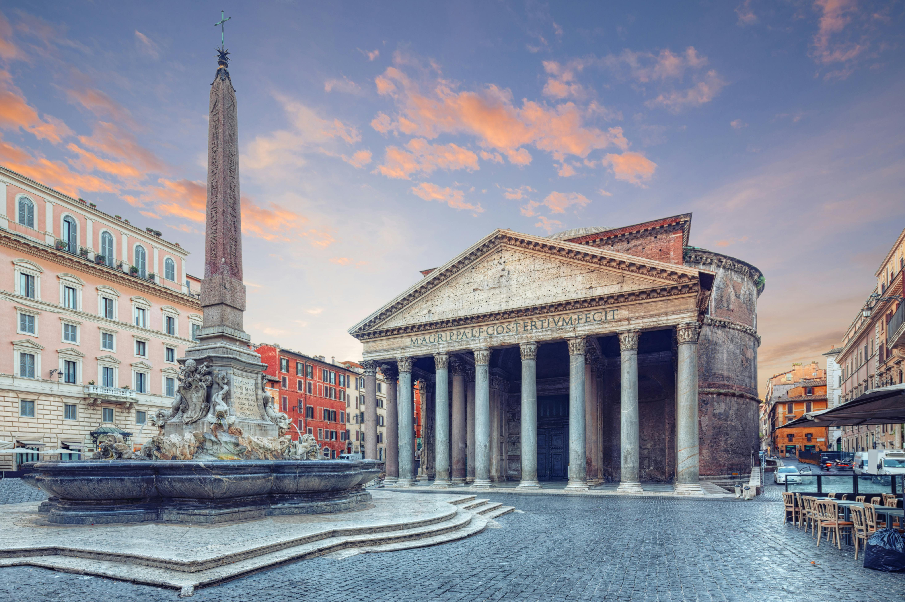 |
Fontanna Trevi, Piazza Navona, Campo de' Fiori
📍 Centrum, ulice i place
0 EUR
✅ DARMOWE PLACE
Przy Trevi obowiązuje strefa płatnego wstępu w godzinach szczytu (1,50 EUR). Place dostępne całą dobę.
|
Barokowy klimat Rzymu, fontanny, lody i aperol do późna w nocy.
🎯 Trevi bez tłoku: 7:30 rano lub po 22:00 – fontanna oświetlona wygląda magicznie. |
| Zdjęcia | Miejsce & Transport | Co zobaczyć? |
|---|---|---|

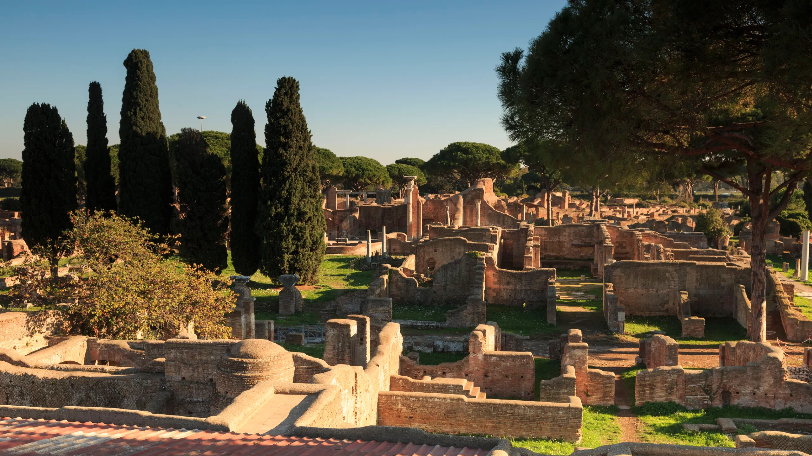 |
Ostia Antica
📍 ~30 min z Porta San Paolo (Metro B)
~12 EUR
🎫 SPOKOJNIE W KASIE
Dojazd: Metro B → st. Piramide, potem pociąg Roma–Lido (zwykły bilet miejski 1,50 EUR). Brak tłumów przy kasach.
🎟 Kup bilety online
|
Antyczne miasto portowe z mozaikami, termami i teatrem – jak Pompeje, ale bez tłumów. Plan min. pół dnia.
Bonus: 3 przystanki dalej – plaża Lido di Ostia. Można połączyć w jeden dzień. |

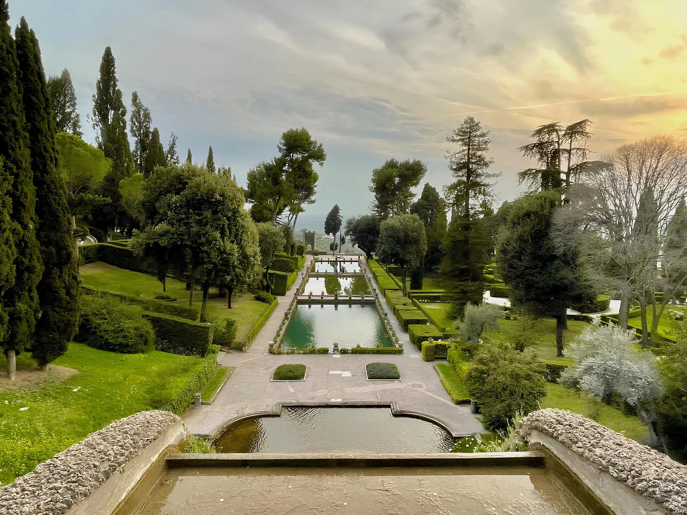 |
Tivoli – Villa d'Este
📍 ~45–60 min z Roma Termini
~15 EUR + ~5 EUR (pociąg)
👉 NA MAJÓWKĘ – ONLINE
Dojazd: Trenitalia ze stacji Termini lub Tiburtina. Na spokojne dni kasa daje radę. Na Majówkę – kup online.
🎟 Kup bilety online
|
Strome tarasowe ogrody renesansowe z setkami fontann – obiekt UNESCO. Jeden z najpiękniejszych ogrodów Europy.
Opcja: W Tivoli jest też Villa Adriana (ruiny rezydencji cesarza Hadriana) – bilet ~10 EUR, warto połączyć. |

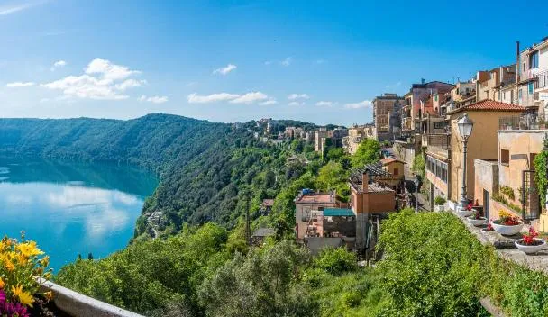 |
Castel Gandolfo
📍 ~40 min z Roma Termini
~12 EUR + ~4 EUR (pociąg)
👉 REZERWUJ ONLINE
Dojazd: Trenitalia. Bilety przez Muzeum Watykańskie – rezerwacja online, bo miejsca mogą się skończyć.
🎟 Kup bilety online
|
Letnia rezydencja papieży nad kraterowym jeziorem Albano otoczonym lasami. Przepiękne widoki i spokój – kompletne oderwanie od zgiełku Rzymu.
Świetna opcja na regenerację między intensywnymi dniami zwiedzania. |